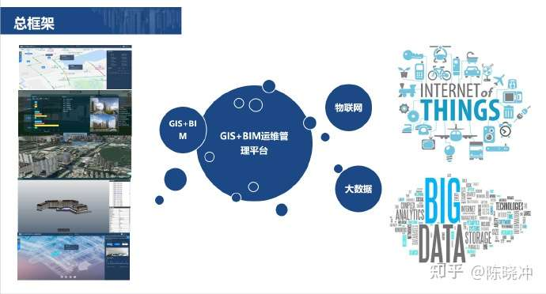

了解GeoTech的发展历程和专业团队
GeoTech成立于2010年，是一家专注于地理信息系统（GIS）技术研发和应用的高科技企业。公司致力于为政府、企业和个人提供高质量的GIS技术解决方案，助力数字化转型。
我们拥有一支专业的技术团队，具备丰富的GIS项目开发经验，能够为客户提供从需求分析、系统设计到开发实施的全流程服务。公司秉承"创新、专业、服务"的理念，不断探索GIS技术的新应用领域。
经过多年的发展，GeoTech已经在城市规划、环境监测、交通管理、国土资源等领域积累了丰富的项目经验，为众多客户提供了优质的GIS解决方案。

GeoTech公司成立，专注于GIS技术研发和应用。
推出首款自主研发的GIS系统，获得市场认可。
拓展业务领域，进入城市规划和环境监测市场。
成立研发中心，加强技术创新能力。
推出WebGIS平台，实现地图的在线浏览和分析。
获得多项GIS技术专利，成为行业领先企业。
创始人 & CEO
技术总监
项目总监
研发经理